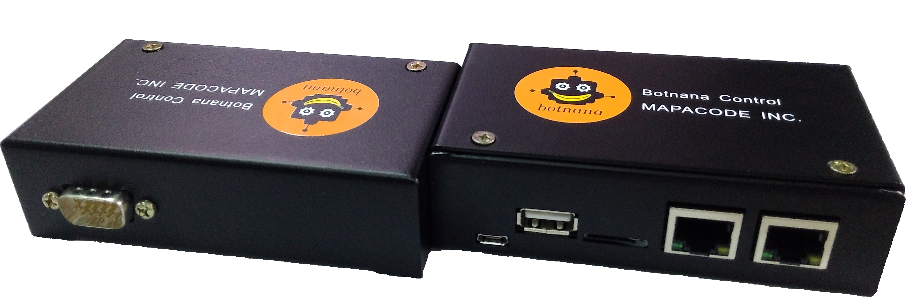

簡介
霸那控制器 (Botnana Control) 是一款工業以太網 EtherCAT 控制器的快速開發以及學習環境。 目標是幫使用者快速開發以工業以太網 EtherCAT 為基礎的自動控制以及工業物聯網應用。

應用領域
霸那控制器軟體適合以下應用
- 資料收集：做為 Remote Control Unit (RTU) 使用。
- 資料分析：透過內建類似試算表的工具及 Javascript，分析收集到的資料。
- 軸控：可透過 EtherCAT 控制 1-32 軸以上的馬達。目前已支援台達電、Panasonic、Sanyo Denki 以及 Yaskawa 的 EtherCAT 馬達驅動器，以及台達電的脈波產生器。 未來將支援 Coply 的 EtherCAT 驅動器。
- 類 PLC 控制：可透過 EtherCAT IO 模組進行類似 PLC 的控制，目前支援台達電及 Beckhoff 的 IO 模組。
- IIoT：透過內建的 Websocket 或 MTConnect 伺服器，和客戶的雲端服務或 HMI 整合。
- CNC 控制器。